You are about to see a musical about Alexander Hamilton. It has big songs, fast words, and lots of drama. This book is meant to be read first, slowly, and argued with.
The people and events are real, though some scenes are imagined, like what it felt like on a ship or in a cold winter camp. The pictures are illustrations made for this book, so the faces are not photographs; nobody took photographs in the 1700s. The musical also changes some things to make a better show, and the back of the book helps you tell what is real and what is stage magic.
Hard things happened in this history, including war, slavery, an affair, and the loss of a child. This book tells those parts honestly. Look for the boxes called “A historian’s question”: they mark places where experts still disagree.
Chapter 1
An Island Boy
1755 or 1757 – 1768
A childhood on the edge of the British Empire, and the loss that shaped everything after it.
Alexander Hamilton began life on Nevis, a small volcanic island in the Caribbean, in a town called Charlestown. Even his birth year is uncertain. Hamilton himself later wrote that he was born in 1757, but a legal document from 1768 lists his age in a way that points to 1755. Historians still argue about which is right, and it is a good first reminder that history is built from incomplete evidence, not from a single clean record.
What is not in doubt is how difficult his start was. His mother, Rachel Faucette, had grown up on the islands and was intelligent, ambitious, and trapped in an unhappy first marriage to a man named Johann Michael Lavien. She left him, and under the law of the time she could not legally remarry. She later formed a relationship with James Hamilton, a Scottish trader whose business ventures rarely worked out. Alexander and his older brother, James Jr., were born outside marriage, a fact that carried real legal and social penalties in that world. As an adult, Hamilton was sensitive about it, and his enemies would throw it at him for the rest of his life.
An illustration of a boy on the shore of Nevis. All the pictures in this book are illustrations, not photographs.
A sugar island
To understand the setting, you have to understand what the islands were for. In the eighteenth century, the British, French, Danish, and Dutch colonies of the Caribbean were some of the most profitable places in the world, and the profit came from sugar. Sugar was grown on plantations and harvested by hundreds of thousands of enslaved Africans, who were brought across the Atlantic in horrific conditions and forced to work until they died. On some islands, enslaved people outnumbered free people many times over. Wealth moved from the islands to Europe, and the people whose labor created it saw almost none of it.
Alexander grew up inside that system. Nevis and, later, St. Croix were societies organized around buying and selling human beings, and a young white boy of his background could not avoid knowing it. Whatever he later believed about slavery, he did not learn about it from books. He saw it every day.
James Hamilton eventually abandoned the family, leaving Rachel to support two sons. She moved them to St. Croix, a Danish island, and ran a small store selling provisions to plantation workers. She was educated, she owned some books, and she taught her sons to read. Alexander picked up French and a love of literature. He also picked up a fierce determination, which would become his defining trait.
Loss
In 1768, when Alexander was somewhere between eleven and thirteen, a serious illness swept through the household. Both Rachel and Alexander fell ill. He recovered, and she did not. Rachel died, and the boys were left effectively orphaned. Because they had been born outside her marriage, the law gave them almost no claim to her property. What little she had went to her first husband’s son instead. The brothers also lost a cousin who had been looking after them, who died shortly afterward.
It is difficult to overstate what this meant. A boy who had already been abandoned by his father now had no parent, no inheritance, and no legal standing. Many people in that situation simply disappeared into the poverty of the island. Hamilton’s response was to go to work, and then to work harder than anyone around him.
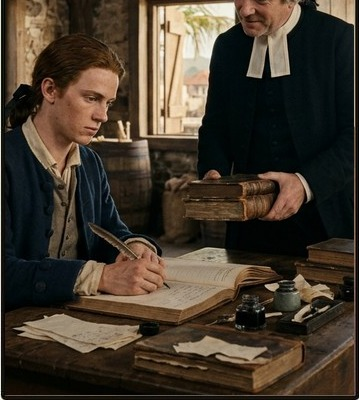
Alexander took a job as a clerk with a firm that traded goods across the Caribbean and North America.
He was taken in as a clerk by Beekman and Cruger, a trading firm that exported goods to North America and imported supplies to the islands. The work was a practical education in economics. He tracked cargo, kept ledgers, calculated prices, wrote business letters, and learned how credit, currency, and trade connect distant places. By his late teens, he was trusted to run the entire operation for several months while the owner was traveling. Many of the ideas he would later use to organize the finances of an entire country were first practiced on the docks of a small island.
He was also reading as fast as he could. A Presbyterian minister named Hugh Knox became his mentor, lending him books on history, philosophy, politics, and poetry. Hamilton later admired the Roman statesmen and writers, and his early letters show a young man who was already thinking about how to turn talent into influence.
“I wish there was a war.”Hamilton, in a letter written as a teenager on St. Croix, expressing his frustration with a limited life and his hunger for a chance to rise
That line can sound chilling out of context, but it reflects something real about a gifted young man with no money or family connections. In the colonial world, war was one of the few things that could upend the rigid social ladder. Hamilton’s ambition was intense, and it was not subtle. He wanted out, and he intended to earn it.
A historian’s question: How much did slavery shape Hamilton?Hamilton later joined an antislavery society and criticized the slave trade, yet he also spent years working for a firm whose business depended on goods and ships connected to slavery, and he later married into a family that held enslaved people. Historians continue to debate how deeply his Caribbean childhood shaped his views, and how consistent he was in acting on them. Throughout this book, you will see that the founding generation often held beliefs that did not match their actions. Hamilton is not an exception, and he is not a simple case either.
Think About It
Hamilton had no money, no family name, and no legal inheritance. What do you think gave him the confidence to believe he could succeed anyway?
Why might a person’s early experiences, like growing up around slavery, affect their ideas decades later?
Chapter 2
The Letter That Changed Everything
1768 – 1772
How a teenager’s writing, in the middle of a hurricane, opened the door to a new life.
By the time he was a teenager, Hamilton had made himself useful, and he had begun making himself noticed. His employer, Nicholas Cruger, relied on him. His mentor, Hugh Knox, believed he was destined for something bigger than clerking in the tropics. But there was a ceiling above him. An orphan with no inheritance in a colonial port had few ways to rise, and no way to get the formal education that could change his path.
What happened next is one of the most unlikely turning points in American history. It started with a storm.
The hurricane
On the night of August 31, 1772, a hurricane struck St. Croix. These storms were a constant danger in the Caribbean, but this one was exceptionally violent. Winds tore the roofs off buildings, flooded the lowlands, and flattened crops. People hid in cellars and stone buildings, listening to the roar of the wind, unsure whether their shelter would hold. In the morning, the island was devastated.
Not long afterward, Hamilton wrote a long letter describing what he had seen and felt. It was addressed to his father, but he must have understood it could be shared. The language is dramatic and vivid. He describes the terror of the night, the sounds of destruction, and the fear that comes when people realize they cannot control what is happening around them. Then he turns, abruptly, to a moral reflection, asking what a catastrophe like this should teach people about their own pride.
The letter was published in the Royal Danish American Gazette, the island’s newspaper. Readers were astonished by it, and even more astonished to learn that the author was a young clerk. A group of local leaders, almost certainly including Hugh Knox, decided that a mind like this should not be wasted on a counting house. They collected money to send him to North America to be educated.
An illustration of the 1772 hurricane that struck St. Croix.
That is an important detail. We tend to remember great figures through the achievements of their adult lives, but Hamilton’s career began with a piece of writing that persuaded strangers to invest in him. It was a pattern that would repeat for the rest of his life: when Hamilton wanted to change minds, he wrote.
Leaving home
In the fall of 1772, Hamilton left St. Croix. He never returned to the Caribbean. He was leaving his older brother, the community that had raised him, and the only landscape he had ever known. According to a family tradition, the ship he traveled on caught fire during the voyage, although everyone survived. Whether or not every detail of that story is accurate, it fits the larger truth: it was a journey into the unknown, undertaken alone, by a teenager who had no safety net.
He arrived in Boston, then made his way to New York. Compared to the island he had left, New York was cold, crowded, and unfamiliar. It was also one of the most important cities in the British colonies, a commercial hub of about twenty thousand people. Hamilton carried letters of introduction from Knox and others, and these opened doors to prominent families, including the Livingstons, who would help him get started.
Think About It
The people of St. Croix invested in a teenager they hardly knew. What does that tell you about the power of writing and communication?
What would be the hardest part of leaving your home and not being able to go back?
Chapter 3
A Stranger in New York
1772 – 1775
Arriving in a colony on the edge of rebellion, and finding a cause.
Hamilton arrived in the mainland colonies during a tense period. To understand why he was about to be swept into something much larger than a school career, you need the background of how Britain and its American colonies had arrived at the brink.
How an empire came apart
The story begins with a war. From 1754 to 1763, Britain fought France in a global conflict that Americans called the French and Indian War and historians now call the Seven Years’ War. Britain won, taking control of vast territory in North America. But the war left Britain deeply in debt, and Parliament concluded that the colonists, who benefited from the victory, should help pay for it.
That decision set off a decade of confrontation. In 1765, Parliament passed the Stamp Act, a tax on printed materials such as newspapers, legal documents, and playing cards. The colonists objected, not only to the money, but to the principle. They elected their own assemblies but had no representatives in Parliament, so, they argued, Parliament had no right to tax them. The phrase “no taxation without representation” captured this argument. After widespread protest and boycotts, Parliament repealed the Stamp Act, but it then passed new taxes, including the Townshend duties on goods like glass, paper, and tea, and it asserted the right to legislate for the colonies “in all cases whatsoever.”
Tensions kept rising. British troops were stationed in Boston, and on March 5, 1770, a confrontation between soldiers and a crowd ended with five colonists dead. Patriot leaders labeled it the Boston Massacre, and it became a rallying cry. Then, in December 1773, a group of colonists boarded ships in Boston Harbor and dumped 342 chests of East India Company tea into the water to protest a tea tax. Britain responded with the Coercive Acts, known in the colonies as the Intolerable Acts, which closed the port of Boston and restricted self-government in Massachusetts. Instead of isolating Boston, those laws pushed other colonies to unite with it.
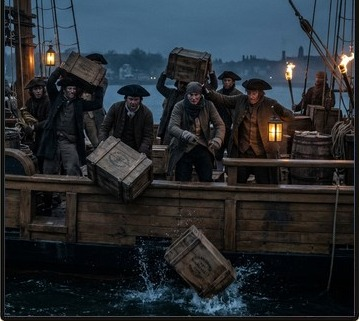
An illustration of the Boston Tea Party, December 1773.
The college student
Meanwhile, Hamilton was making his way. He spent time at a preparatory school in Elizabethtown, New Jersey, where he studied intensely, sometimes, according to classmates, working late into the night. In 1773, he enrolled at King’s College, now Columbia University. He was older than many students, he had no family name behind him, and he was determined to complete his studies quickly.
In New York, public life was bubbling over. Colonists were split. Many wanted to protest the British government but hoped to stay within the empire. Loyalists, who stayed faithful to the Crown, were numerous, especially in New York. Patriots wanted greater rights, and some already imagined independence. Hamilton could easily have stayed out of it. Instead, he stepped in.
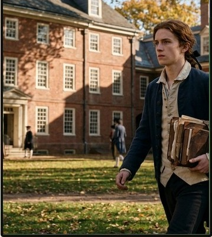
An illustration of Hamilton at King’s College, in the early 1770s.
In July 1774, he spoke at a large outdoor meeting in New York, defending the cause of the colonies. Observers were reportedly startled that such an impressive speech came from a college student. Soon afterward, he turned to print. In 1774 he published A Full Vindication of the Measures of the Congress, responding to a Loyalist pamphlet that attacked the Continental Congress. In early 1775 he followed it with The Farmer Refuted, a longer rebuttal. These were serious political arguments, drawing on history, law, economics, and philosophy. Many readers assumed they had been written by a much older and more experienced man. Hamilton was still a teenager or in his very early twenties.
Hamilton’s argument, in briefIn his pamphlets Hamilton argued that people’s rights are not just granted by kings or laws but come from human nature itself, and that no government has the authority to take them away. These ideas would soon appear in the Declaration of Independence.
One story captures his temperament. Just weeks after the first shots of the war, in May 1775, an angry crowd of Patriots gathered outside the home of Myles Cooper, the Loyalist president of King’s College. According to the account that has come down to us, Hamilton stood on the steps and talked to the crowd long enough for Cooper to escape. If the story is accurate, it shows an interesting detail about Hamilton. He supported the cause of liberty, but he was uncomfortable with mob violence.
By then, the argument had moved beyond words. On April 19, 1775, British soldiers and colonial militia had exchanged fire at Lexington and Concord in Massachusetts. The war that would become the American Revolution had begun.
Think About It
Parliament argued that the colonists benefited from British protection and should pay for it. The colonists argued that taxes should only be set by representatives they elected. Which argument do you find more convincing, and why?
Hamilton supported the Patriot cause but disliked mob violence. When is protest justified, and when does it go too far?
Chapter 4
The Pen and the Cannon
1775 – 1776
From pamphleteer to artillery captain, as the colonies move toward independence.
When the fighting began, Hamilton did not hesitate. He joined a volunteer militia unit in New York and studied military tactics on his own, reading books on artillery and engineering. By early 1776, he was thinking not just about taking part in the war, but about leading a unit within it.
His chance came when the New York Provincial Congress agreed to create an artillery company. Hamilton, still in his early twenties at most, impressed the authorities enough to be named its captain. He recruited men, drilled them intensely, and worked hard to get uniforms and supplies. His company was known for its discipline, and its guns would soon be tested in real combat.
Declaring independence
In the meantime, the larger political question was coming to a head. Through 1775 and into 1776, public opinion in the colonies shifted. A pamphlet called Common Sense, published in January 1776 by Thomas Paine, argued in blunt, accessible language that the colonies should break from Britain entirely. It sold enormous numbers of copies, and it helped make independence a mainstream idea.
In June 1776, delegates of the Second Continental Congress in Philadelphia asked a committee to draft a statement explaining why the colonies were separating from Britain. The principal author was a young Virginian named Thomas Jefferson. On July 4, 1776, Congress adopted the Declaration of Independence.
“We hold these truths to be self-evident, that all men are created equal, that they are endowed by their Creator with certain unalienable Rights, that among these are Life, Liberty and the pursuit of Happiness.”Declaration of Independence, 1776
These words have been argued over ever since. At the time, they were revolutionary, and they were also incomplete. Jefferson wrote them while enslaving more than a hundred people himself. Women could not vote. Native nations were being pushed off their lands. The promise of the sentence was far larger than the practice of the people who signed it. Later generations, from abolitionists to suffragists to civil rights leaders, would quote it back to the country as a standard to live up to. In that sense, the Declaration is both a statement of ideals and an unfinished agenda.
A hard summer
Declaring independence was easy compared to winning it. In the summer of 1776, Britain sent a huge force to New York, the largest expeditionary army it had ever assembled, with warships and tens of thousands of soldiers. In August, they defeated General George Washington’s Continental Army at the Battle of Long Island. Washington narrowly escaped capture by evacuating his troops across the East River by night. Over the following weeks, the Americans suffered a series of defeats and were driven out of New York City, then out of Manhattan and across New Jersey.
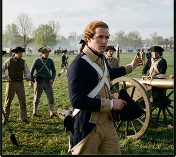
An illustration of Hamilton and his artillerymen in the field.
Hamilton’s artillery company fought through much of this retreat. At the Battle of White Plains, in October, his guns helped cover the army’s withdrawal. Later, as the army fell back across New Jersey toward the Delaware River, his battery slowed the British pursuit. Witnesses reported that the young captain stayed calm and kept his guns firing under pressure. It was the kind of display that senior officers remember.
By the end of the year, the cause looked nearly lost. Enlistments were about to expire, soldiers were deserting, and the winter was setting in. Paine, who was marching with the army, wrote that these were “the times that try men’s souls.” If the Continental Army dissolved, the Revolution would end with it.
Think About It
The Declaration says “all men are created equal,” but the people who signed it did not apply that standard to everyone. Does that make the idea less powerful, or more?
Why might discipline matter so much for a young officer trying to earn respect?
Chapter 5
Retreat and Rebound
December 1776 – 1777
A desperate gamble on a frozen river, and the beginning of a partnership.
By December 1776, George Washington was in serious trouble. His army had shrunk, many soldiers’ enlistments would expire at year’s end, and morale was low. Washington understood that a revolution without victories could not survive. He needed to do something bold, and he needed to do it quickly.
His plan was to cross the Delaware River at night and attack a garrison of Hessian soldiers in Trenton, New Jersey. The Hessians were German troops hired by the British government, professional soldiers who had been fighting alongside the redcoats. Washington hoped to catch them off guard just after the Christmas holiday.
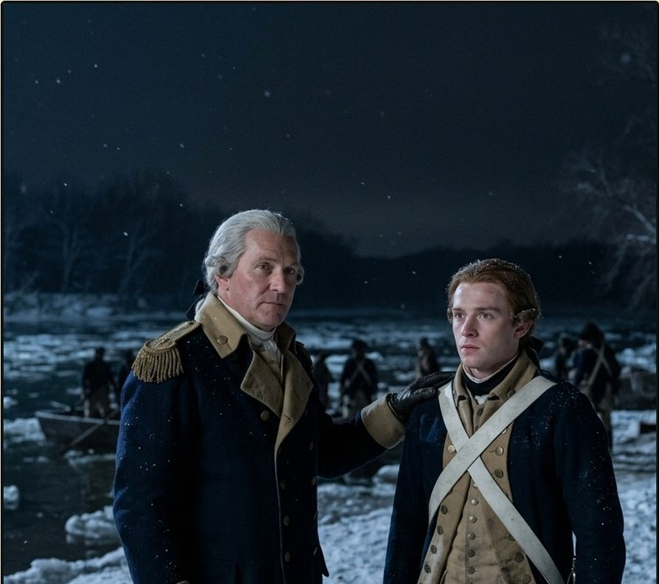
An illustration of Washington and Hamilton on the icy river on Christmas night, 1776.
On the night of December 25, the army began crossing. The river was clogged with ice, the weather was freezing, and a storm blew in with sleet and snow. Men and cannons had to be ferried across in boats, and the operation ran hours behind schedule. Hamilton, with his artillery, was part of the force. After crossing, they marched about nine miles through the storm to Trenton. At dawn on December 26, they struck. The Hessians were overwhelmed in a battle that lasted about an hour, and the Americans captured roughly nine hundred prisoners at a very small cost in lives.
A few days later, Washington outmaneuvered a larger British force and won another victory at Princeton, New Jersey, in early January 1777. Hamilton’s guns were in the middle of the fighting, and he reportedly placed them to fire on a building where British soldiers had barricaded themselves. After that, the army withdrew to winter quarters in Morristown, New Jersey. The Revolution was not won, but it was alive. These victories, small by the standards of great battles, were enormously important to morale, and they helped the Americans attract recruits and foreign interest.
A job offer
At Morristown, other officers took notice of Hamilton. Several senior officers noticed his skill with artillery and tried to recruit him onto their personal staffs. Hamilton turned them down, because he wanted a field command and the glory he thought came with it.
Then Washington asked. In early March 1777, Hamilton accepted a position as one of the general’s aides-de-camp, with the rank of lieutenant colonel. The job was less glamorous than leading troops, but it put him in the center of the war. An aide-de-camp drafted letters, carried orders, met with other officers, and often wrote in the general’s name. Washington, who was not a gifted writer himself, needed someone with Hamilton’s speed and clarity. The young man from St. Croix was now one of the most trusted staff officers in the army.
It was an astonishing rise. Only five years earlier, Hamilton had been an orphaned clerk on an island in the Caribbean. Now, he was sitting at the elbow of the man who held the American cause together.
A historian’s question: Was the war really won at Trenton?Most historians agree that Trenton and Princeton did not decide the war, but they did save it. They convinced Congress, foreign observers, and ordinary Americans that the Continental Army could still win battles. Without them, enlistments might have collapsed and France might never have joined the war. Small victories, at the right moment, can matter more than big ones.
Think About It
Washington needed a victory to keep the army alive. When is it worth taking a big risk, and when is it better to be cautious?
Hamilton wanted battlefield glory, but his greatest talent was writing. Do you think people always understand their own strengths?
Chapter 6
The General’s Right Hand
1777 – 1780
Life at headquarters, deep friendships, and falling in love in the middle of a war.
Washington’s staff was a small, intense group. Aides lived with the general, ate with him, wrote for him, and often slept in the same house or tent. The work could be exhausting. Hamilton drafted letters to Congress, to governors, and to foreign officers, sometimes writing deep into the night. He also became skilled at interpreting Washington’s intentions and turning them into clear, forceful prose. Over time, he started to influence the thinking of the army itself.
He saw the weakness of the new American government up close. The Continental Congress had no power to tax. It begged the states for money, soldiers, and supplies, and the states often refused. The army had to survive on whatever it could scrape together. Hamilton later cited this experience as the origin of many of his ideas. If the national government had no real authority, he concluded, the country could not win the war and could not survive the peace.
Valley Forge
That lesson became painfully real in the winter of 1777–1778. After a hard campaign, the army camped at Valley Forge, Pennsylvania. Food was scarce, clothing was inadequate, and disease spread through the huts. Thousands of soldiers fell sick, and many died, though not mostly from combat. At the same time, the camp became a training ground. A Prussian officer named Baron von Steuben, who spoke little English at first, taught the soldiers a simple, standardized system of drill and maneuver. When the army marched out in the spring, it was more disciplined than it had been before.
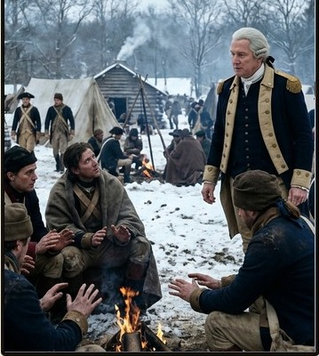
An illustration of soldiers at Valley Forge.
In June 1778, at the Battle of Monmouth in New Jersey, the new discipline showed. The battle was chaotic, with a controversial retreat led by General Charles Lee that Washington personally confronted. Hamilton, like most of the staff, was angry at Lee. The Americans held their ground and fought the British to a draw in the heat of the day. It was the last major battle in the north.
Friends
Some of the most important relationships in Hamilton’s life came from this period. Another aide, John Laurens, the son of a wealthy South Carolina slaveholder, shared Hamilton’s intensity and intellect. Laurens detested slavery and proposed to organize regiments of enslaved men who would earn their freedom by serving in the army. His own state’s leaders rejected the plan, but Hamilton supported it. Their friendship was close, and their letters show how much it meant to both. Laurens was killed in a minor skirmish in South Carolina in 1782, after the fighting had essentially ended. Hamilton was devastated.
Another key friend was the Marquis de Lafayette, a French aristocrat who had come to America at nineteen, driven by a belief in liberty and an appetite for glory. Washington came to treat him almost like a son. Lafayette later played a major role in persuading France to give the Americans more help, and he and Hamilton remained close for years.
An illustration of Hamilton and Washington working at headquarters.
Eliza
In the winter of 1779–1780, the army was camped again at Morristown, and Hamilton met Elizabeth Schuyler, the daughter of General Philip Schuyler, one of the most powerful men in New York. Eliza, as she was known, was intelligent, warm, and strong-willed. Hamilton was captivated. They became engaged, and they were married on December 14, 1780, at the Schuyler family home in Albany.
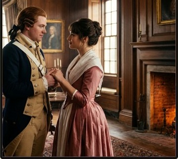
An illustration of Alexander and Eliza.
The marriage connected the penniless orphan to one of the most prominent families in the state. It also connected him to Eliza’s sisters, especially Angelica, a witty and politically sharp woman who became one of his closest confidantes. Their correspondence is warm and lively, and it has fascinated historians and readers for generations.
In the same period, the Revolution suffered a shock: the treason of Benedict Arnold, one of its most celebrated generals, who tried to hand over the fortress at West Point to the British in September 1780. Arnold escaped, but his British contact, Major John André, was captured and hanged. Hamilton, who was close to the scene, wrote about the episode with a mix of horror and fascination. It was a reminder that the war was a struggle not only of armies but of loyalties.
Then came a break. In February 1781, Washington snapped at Hamilton for making him wait on a staircase. Hamilton took offense and resigned from the staff, although the two men eventually reconciled. The incident shows Hamilton’s fierce pride and sensitivity to being slighted, traits that would both drive him and cause him trouble later in life.
At the TheaterIn the musical, Eliza and her sisters are central characters. As you watch, think about how the show uses the Schuyler family to show the personal side of political history.
Think About It
Laurens wanted to free enslaved men who would fight for the Revolution. Why might that idea have been both radical and rejected?
Hamilton resigned from Washington’s staff over a small insult. What does that tell you about his personality?
Chapter 7
Redoubt 10 and Yorktown
1781
The final campaign of the war, and the charge that made Hamilton a hero.
After leaving the staff, Hamilton kept pressing for a field command. He wrote letters to Washington and to others, making it clear that he wanted to fight, and he waited for his chance. By the summer of 1781, events were building toward a decisive moment.
In the south, the British general Charles Cornwallis had marched his army into Virginia. Washington saw an opportunity. A French fleet under Admiral de Grasse was sailing toward the Chesapeake Bay, and French troops under Comte de Rochambeau were already in America. If those forces could be combined in the right place at the right time, Cornwallis might be trapped.
Washington and Rochambeau marched their combined army hundreds of miles from New York to Virginia, a secret and risky movement that depended on perfect timing. De Grasse defeated the British navy off the Virginia coast, cutting off Cornwallis’s escape by sea. The allied armies closed in on Yorktown, a small port on the York River, where Cornwallis had settled his troops.
Hamilton finally got his command. Washington gave him a battalion of light infantry, a position that made him a combat officer for the first time in years.
The siege
Yorktown was a classic siege. The allied armies dug trenches and moved their artillery closer to the British lines under cover of darkness. The cannons opened fire, bombarding the town day and night. The British lines were shrinking. But two small fortified positions on the British left, called Redoubts 9 and 10, stood in the way of the allied approach. They had to be taken.
The night of October 14, 1781, was chosen for the attack. French troops would storm Redoubt 9, while Hamilton’s battalion, along with other American units, would storm Redoubt 10. Hamilton ordered his men to unload their muskets and rely on bayonets alone. The reasoning was practical: in the dark, a single accidental shot could alert the defenders and ruin the surprise. Silence was their best weapon.
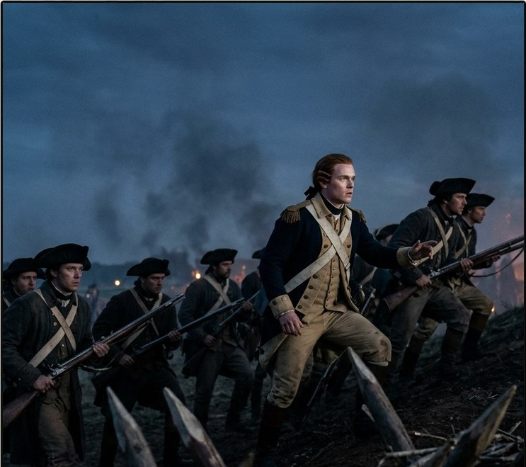
An illustration of American troops approaching a British redoubt at night.
The soldiers moved forward quietly, then charged. They climbed over the defenses, and fought hand to hand briefly with bayonets. Within a matter of minutes, the redoubt was in American hands. Hamilton had led the assault personally. The French captured their redoubt as well. With both positions secured, the allied armies could complete their closest trenches.
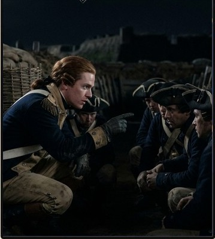
An illustration of soldiers in the trenches at Yorktown.
Cornwallis tried a desperate counterattack and then attempted to evacuate his troops across the river, but a storm ruined the plan. On October 17, he asked for terms, and on October 19, 1781, his army surrendered. Legend says that a British band played a tune called “The World Turned Upside Down” during the surrender ceremony, though historians are uncertain about it. Cornwallis himself did not attend, claiming illness, and sent a subordinate to hand over his sword.
What it meant
The surrender at Yorktown did not end the war immediately, but it broke the will of the British government to continue it. Negotiations followed, and in 1783 the Treaty of Paris recognized American independence. The new nation also gained territory, stretching to the Mississippi River. It had defeated the most powerful empire in the world, with crucial help from France.
For Hamilton, Yorktown was the culmination of everything he had wanted since he was a teenager on St. Croix. He had won the field command and military glory he had longed for. In January 1782, he and Eliza welcomed their first child, Philip. But Hamilton was already looking beyond the battlefield. The war was over, and the hard work of building a country was beginning.
A historian’s question: Who really won at Yorktown?It is common in American stories to focus on Washington, but Yorktown was truly a joint operation. French ships blocked the British fleet, French soldiers made up about half of the allied army, and French engineers and artillery were vital to the siege. Most historians believe that without France, the Revolution would likely have failed or dragged on much longer. The victory was American and French together.
At the TheaterThe musical treats Yorktown as a high point for Hamilton, and it highlights his friendship with Lafayette. Watch how the show uses the battle to show both his courage and his drive to be recognized.
Think About It
Why do you think Hamilton ordered his troops to unload their weapons before the attack?
Why does it matter that the victory depended on a foreign ally? What does that say about how wars are won?
Chapter 8
A Country That Wasn’t Working
1781 – 1787
Victory in war, and the discovery that winning independence was easier than governing a nation.
After Yorktown, many Americans assumed the hard part was over. In fact, the hardest part was beginning. The thirteen states had won independence, but they had not yet built a country. What they had was a loose alliance held together by a document called the Articles of Confederation.
What was wrong with the Articles?
The Articles of Confederation, drafted during the war and finally ratified in 1781, reflected the fears that had caused the Revolution. Having just fought a king, Americans were deeply suspicious of concentrated power. So they created a national government that was intentionally weak. Congress had one chamber, with one vote per state. There was no president, no national court system, and no independent power to tax. To raise money, Congress had to ask the states, and the states frequently ignored the requests. Major decisions required the approval of nine states, and any change to the Articles required all thirteen.
The consequences showed up quickly. Congress could not pay its debts, including what it owed soldiers who had fought the war. It could not enforce the peace treaty with Britain, because states often violated its terms. It could not regulate trade, so states imposed their own tariffs, sometimes against each other. Money was a mess, with states printing paper currency of uncertain value. Foreign governments looked at the United States and wondered whether it would survive.
Hamilton, who had spent years watching the problem from Washington’s headquarters, was convinced that the country needed a stronger central government. He said so, loudly and repeatedly.
A lawyer in New York
Hamilton left the army and prepared to become a lawyer. He studied intensely, and with special permission, took the bar exam in 1782 after only a few months of preparation. That same year he was chosen as a New York delegate to the Continental Congress, where he saw its helplessness firsthand. He soon opened a law practice in New York City and became one of the city’s most successful attorneys.
One early case showed how he thought. In 1784, in a case called Rutgers v. Waddington, Hamilton defended a British merchant who was being sued under a New York law that punished people who had stayed in British-occupied territory during the war. Many Patriots were furious that Hamilton would defend a Loyalist. But Hamilton argued that the state law conflicted with the peace treaty and with the principle that national agreements must be honored. It was an early version of an argument he would make for the rest of his career: that the country needed a legal framework stronger than the passions of the moment.
In the same period, he helped found the Bank of New York, which is still in business today as part of a larger institution, and he became a founding member of the New York Manumission Society, an organization that worked to end slavery gradually and to protect free Black New Yorkers. His family was growing too. Eliza gave birth to their daughter, Angelica, in 1784, and a son, Alexander Jr., in 1786.
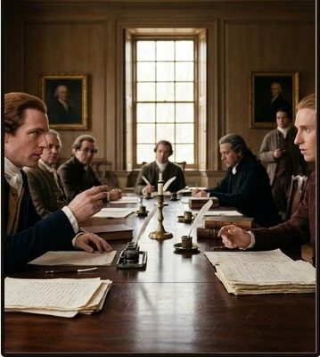
An illustration of political leaders in a meeting room in the 1780s.
Shays’ Rebellion and Annapolis
The weakness of the system became harder to ignore in 1786. In western Massachusetts, farmers were being crushed by debt and taxes, and many were losing their farms. A Revolutionary War veteran named Daniel Shays helped lead an armed movement that shut down courts to stop foreclosures. In early 1787, rebels marched on a federal arsenal in Springfield. The national government had no army to send, so Massachusetts had to raise a private force to put the uprising down.
Many leaders looked at Shays’ Rebellion and concluded that the Articles had failed. Hamilton had already been working with James Madison of Virginia to convene a meeting of states. In September 1786, delegates from five states gathered in Annapolis, Maryland, to discuss trade. Too few states attended to accomplish much, but Hamilton drafted a report proposing a new convention in Philadelphia the next year to consider fixing the entire system. Congress eventually agreed.
A historian’s question: Was the Articles period a failure or a crisis exaggerated by nationalists?Some historians argue that the 1780s were truly a critical period. Others note that the Articles did achieve things, such as the Northwest Ordinance, which set rules for new territories. They suggest that nationalists like Hamilton and Madison emphasized the crisis to build support for a stronger government. Probably both views contain truth, and the argument is a reminder that people shaping history often have a stake in how it is told.
Think About It
If you were designing a government right after a revolution against a king, how much power would you give it? What would you worry about?
Hamilton defended a Loyalist in court even though it made him unpopular. When should a person defend an unpopular position?
Chapter 9
Philadelphia, Summer 1787
May – September 1787
Fifty-five delegates, a locked room, and the creation of the Constitution.
In late May 1787, delegates from twelve states began arriving in Philadelphia. Rhode Island refused to send anyone. They met in the Pennsylvania State House, the same building where the Declaration of Independence had been adopted. The convention elected George Washington as its president. Benjamin Franklin, then eighty-one, attended, along with a rising young Virginian named James Madison, who had arrived with a plan and a stack of research.
The delegates had been authorized only to revise the Articles of Confederation. Almost immediately, they decided to do something much bigger: start over. They agreed to keep their proceedings secret. Windows were kept shut through the sweltering Philadelphia summer, guards stood at the doors, and delegates promised not to discuss the debate publicly. They believed that secrecy would allow them to speak freely, change their minds, and reach compromises.
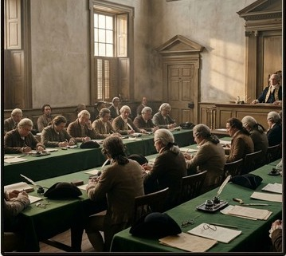
An illustration of delegates at work in Philadelphia during the summer of 1787.
The big arguments
Madison’s plan, introduced by Edmund Randolph of Virginia, proposed a strong national government with three branches and a legislature based on population. Small states were alarmed. They feared that large states like Virginia and Pennsylvania would dominate, so they offered a rival proposal, the New Jersey Plan, that kept equal votes for each state. The debate dragged on for weeks and nearly broke up the convention.
The solution, reached in mid-July, is called the Great Compromise, or the Connecticut Compromise. Congress would have two chambers. In the House of Representatives, seats would be assigned according to population. In the Senate, each state would have two senators regardless of size. It was a deal that satisfied neither side entirely, and it is still the structure of Congress today.
The delegates also confronted slavery, the issue that made their work most morally uncomfortable. Delegates from the Deep South made clear that they would not join a union that threatened slavery. The convention agreed to compromises that protected it. Enslaved people would count as three-fifths of a person for the purpose of assigning seats in the House, which gave slaveholding states more political power. Congress was barred from ending the international slave trade until 1808. And a clause required that people who escaped slavery be returned. The words “slave” and “slavery” do not appear in the original text, but the system is written all through it.
Some delegates, including a number from the South, argued that the compromises were necessary to build a union. Others, then and now, have argued that they were a moral betrayal that postponed a reckoning and allowed slavery to grow for decades. Most historians see the Constitution as both a remarkable achievement in self-government and a document that embedded a profound injustice.
Hamilton in the room
Hamilton’s role in Philadelphia was complicated. He was one of three delegates from New York, but the other two, Robert Yates and John Lansing, opposed the idea of a strong national government. They outvoted him and then left the convention in July, which meant New York had no vote for much of the proceedings. Hamilton was often outnumbered and frustrated, and he left for stretches of time.
On June 18, he gave a speech that lasted roughly five hours. In it, he argued that the British system, with its strong executive and aristocratic upper house, was the best model of government in the world. He proposed a president and senators who would serve for life, as long as they behaved well, and he wanted state governments to be subordinate to the national one. The delegates listened respectfully, then largely ignored him. Many viewed the proposals as too close to monarchy, and some suspected he wanted to recreate the system the Revolution had overthrown.
Hamilton was more pragmatic than that reputation suggests. Although he thought the final Constitution too weak in some respects, he supported it wholeheartedly. When the delegates assembled to sign on September 17, 1787, Hamilton was the only member of the New York delegation to put his name to it. He believed that a flawed but workable framework was far better than the failing Articles.
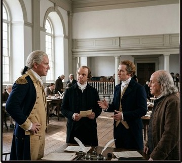
An illustration of leaders conferring in the hall.
What they built
The Constitution begins with the words “We the People.” It creates three branches. Congress makes laws. The president carries them out. The courts interpret them. Each branch has ways to check the others: the president can veto laws, Congress can override vetoes and impeach officials, the courts can strike down laws that violate the Constitution. This system of separation of powers and checks and balances was designed to prevent anyone from gaining unchecked authority. The Constitution also divides power between the national government and the states, a system known as federalism. And it includes a process for amendment, allowing the document to change over time.
Of the fifty-five delegates, thirty-nine signed. A few refused, including Virginia’s George Mason, who objected in part because the document did not include a bill of rights. The convention sent the Constitution to the states for ratification. Nine of the thirteen would have to approve it for it to go into effect. The real fight was just beginning.
At the TheaterThe musical compresses the Constitutional Convention to keep the story moving. In real life, it was a long, hot, and secret summer. Notice how the show treats Hamilton’s relationship with Washington and Madison, and think about how it differs from what you read here.
Think About It
The Great Compromise balanced the interests of large and small states. Can you think of a modern disagreement that might require a similar compromise?
The Constitution never uses the word “slavery” but protects it. Why might the framers have chosen that approach, and what does it tell us?
Chapter 10
Publius
1787 – 1788
How a series of newspaper essays helped persuade a skeptical state to join the Union.
The Constitution was not the end of the story. It had to be approved by special conventions in at least nine states, and the debate was fierce. Supporters, who called themselves Federalists, argued for a stronger union. Opponents, called Anti-Federalists, feared that a distant, powerful national government would trample liberty, just as Britain had.
The Anti-Federalists included some of the Revolution’s most famous figures. Patrick Henry of Virginia warned that the government would become a tyranny. George Mason objected that the Constitution lacked a list of individual rights. Others wrote under pen names, such as “Brutus” and “the Federal Farmer,” raising serious questions about taxes, standing armies, and whether a republic could govern such a vast territory.
New York was a critical battleground. Governor George Clinton led a strong anti-Federalist faction, and the state’s convention was likely to reject the Constitution. If New York refused, the new union would be missing a key piece, because it connected New England to the rest of the country and controlled the port of New York City.
A plan in print
Hamilton devised a strategy: argue the case in the newspapers. He recruited John Jay, a New York lawyer and diplomat, and James Madison, who was in New York attending Congress. Together, they published a series of essays defending the Constitution. To keep readers focused on the ideas rather than on the authors, they used a pen name, Publius, taken from a Roman consul who was praised as a defender of the republic.
The first essay appeared in late October 1787. Over the next several months, eighty-five were published, usually in New York newspapers. Hamilton wrote the majority, about fifty-one. Madison wrote about twenty-nine, and Jay, who fell ill, wrote five. Hamilton was practicing law at the same time, and he is said to have written some of the essays in a single night. Collectively, they are known as The Federalist, or the Federalist Papers.
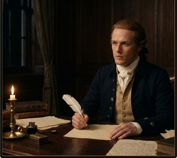
An illustration of Hamilton writing by candlelight.
“[It] seems to have been reserved to the people of this country, by their conduct and example, to decide the important question, whether societies of men are really capable or not of establishing good government from reflection and choice, or whether they are forever destined to depend for their political constitutions on accident and force.”Hamilton, Federalist No. 1, 1787 (shortened)
That opening sentence frames the whole project. It argues that the American experiment was more than a local dispute. It was a test of whether people could create a government deliberately instead of inheriting one from conquest or luck.
Some of the essays remain famous. In Federalist No. 10, Madison argued that a large republic could actually protect liberty better than a small one, because a large number of competing interests would make it hard for any single faction to take control. In Federalist No. 51, he wrote about checks and balances.
“If men were angels, no government would be necessary.”Madison, Federalist No. 51, 1788
Hamilton’s essays covered the need for a strong executive, a taxing power, a national judiciary, and a united defense. In Federalist No. 70, he argued that an energetic executive was essential to good government. In Federalist No. 78, he described the judiciary as the “least dangerous” branch, since it controlled neither the sword nor the purse, and he argued that courts should be able to strike down laws that violate the Constitution. That idea, called judicial review, became a cornerstone of American law. Today, when judges and lawyers argue about what the Constitution means, they still cite these essays.
Ratification
The campaign for ratification moved through the states. Delaware was first, in December 1787. Others followed, some quickly and some after bitter fights. In June 1788, New Hampshire became the ninth state to ratify, which meant the Constitution would take effect. But the new union could not succeed without Virginia and New York.
In New York, the convention met at Poughkeepsie in June 1788. Hamilton, leading the Federalists against a larger Anti-Federalist majority, debated for weeks. He argued, he cajoled, and he waited for events. News that New Hampshire and then Virginia had ratified shifted the mood, and some opponents began to worry about being left outside the union. On July 26, 1788, New York voted to ratify, 30 to 27. It was extremely close, and Hamilton’s persistence had made a difference.
The Anti-Federalists did not lose entirely. Their critique that the Constitution lacked guarantees of individual rights was widely shared. Federalists, including Madison, promised to add amendments. In 1789, Madison drafted them in Congress, and in 1791 the first ten amendments, known as the Bill of Rights, were ratified. They protect freedom of speech, religion, and the press, the right to a fair trial, and other basic liberties.
A historian’s question: Did Hamilton oppose the Bill of Rights?In Federalist No. 84, Hamilton argued that a bill of rights was unnecessary, and even dangerous, because the government had only the powers the Constitution granted. Listing rights, he worried, might imply that anything unlisted could be taken away. He lost that argument, and most Americans today consider the Bill of Rights essential. It is an example of Hamilton being brilliant on structure but less attuned to public fears about power. It is also a reminder that a historical figure can be right about some things and wrong about others.
Think About It
Madison argued that a bigger republic can be safer than a small one. Does that match what you see in modern politics?
Why might the writers of the Federalist Papers have chosen to publish them under a pen name?
Chapter 11
The Treasury
1789 – 1792
Building a financial system from scratch, and the rivalry that divided the founders.
On April 30, 1789, George Washington stood on the balcony of Federal Hall in New York City, then the nation’s capital, and took the oath of office as the first president of the United States. The crowd below cheered. Nobody had ever held the job before, and Washington knew that every decision he made would become precedent.
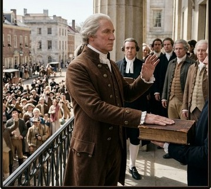
An illustration of Washington taking the oath of office in 1789.
Washington needed advisers. He chose Thomas Jefferson, then serving as the American minister in Paris, to be Secretary of State, handling foreign affairs. He chose Henry Knox as Secretary of War and Edmund Randolph as Attorney General. And for the most pressing and complicated job, the Treasury, he chose Alexander Hamilton, who was in his early thirties.
The assignment was enormous. The new government inherited huge debts from the Revolution, owed both to foreign lenders and to American citizens, and the states carried debts of their own. Its credit was weak, it had no reliable source of revenue, and no established banking or currency system. Congress asked Hamilton to prepare a plan. He responded with a series of reports that remain among the most influential documents in American economic history.
The First Report on the Public Credit
In January 1790, Hamilton submitted his plan for the debt. He proposed that the federal government pay its debts in full, at face value. He argued that doing so would establish the credit of the United States, allowing it to borrow cheaply in the future, as strong nations do. He also proposed that the federal government assume the war debts of the states, combining them into one national obligation.
The plan had a strategic purpose beyond bookkeeping. By making creditors depend on the success of the national government, Hamilton hoped to bind wealthy citizens to the new Union. But it was controversial. Critics, including Madison, objected that paying face value would enrich speculators who had bought up depreciated bonds from struggling veterans. And some states, such as Virginia, had already paid off much of their debt, and their leaders did not want to subsidize those who had not.
The fight in Congress dragged on. In the summer of 1790, according to Jefferson’s later account, he arranged a dinner with Hamilton and Madison to break the deadlock. The result was a compromise: Madison and his allies would let the assumption plan pass, and in exchange, the permanent capital would be located on the Potomac River, in the South, after a ten-year stay in Philadelphia. That site would become Washington, D.C. Historians debate how much one dinner actually decided, but the bargain was real.
A national bank
In December 1790, Hamilton proposed a national bank. The Bank of the United States would hold government funds, issue a stable currency, and make loans. Congress approved the idea, but opponents argued that the Constitution did not give Congress the power to create a bank. Jefferson and Madison insisted on a strict reading: if a power was not listed, it did not exist.
Hamilton responded with a broad reading. The Constitution says Congress can make all laws “necessary and proper” to carry out its listed powers. A bank, he argued, was a reasonable means to the end of managing taxes, borrowing, and commerce. Washington, after consulting both men, sided with Hamilton and signed the bill. The doctrine of implied powers that Hamilton developed would shape American constitutional law for centuries.
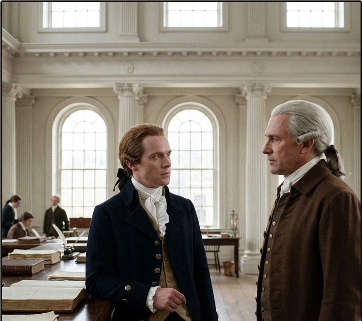
An illustration of Hamilton and Washington conferring.
Other building blocks
The Treasury Department’s work was wide-ranging. Hamilton helped design the nation’s coinage and system of money, based on the dollar and decimal units. He organized a tariff system, along with taxes on goods like whiskey, to raise revenue. He proposed a fleet of armed boats to enforce customs laws, and in 1790 Congress created the Revenue Cutter Service, a forerunner of today’s Coast Guard. In December 1791, in his Report on Manufactures, he proposed encouraging American industry through tariffs and subsidies. Congress adopted only parts of the plan, but the report laid out a vision of an economy that would one day become industrial.
Two visions of America
As Hamilton’s program unfolded, a split emerged. Jefferson, who had returned from Paris to join the government, saw Hamilton’s plans as a threat. In his view, the nation’s strength lay in independent farmers, and he feared that a powerful central bank, a national debt, and a wealthy financial class would corrupt the republic and favor a privileged few. Hamilton believed the opposite. A strong commercial economy, with banks, credit, and manufacturing, would make the country wealthy, independent, and secure from foreign powers. He thought Jefferson’s approach was romantic and impractical.
The conflict spread to the public. Supporters of Hamilton, who were called Federalists, and supporters of Jefferson and Madison, who eventually called themselves Democratic-Republicans, backed rival newspapers and attacked each other in print. These were the first political parties in American history, and Washington, who disliked partisanship, was dismayed to see his cabinet divided.
Two visions, side by sideHamilton: strong national government; broad reading of the Constitution; banking, manufacturing, and commerce; cities and credit; closer ties with Britain. Jefferson: limited national government; strict reading of the Constitution; independent farmers and agriculture; suspicion of banks; closer ties with France. Both men loved the republic and feared how it might fail.
A historian’s question: Was Hamilton the architect of modern America?Many economists and historians credit Hamilton with creating the foundations of American finance. Others point out that his policies favored the wealthy and the well-connected, and that they sometimes drew on the same slave economy that made the nation’s early growth possible. The truth is that Hamilton’s system worked, but who benefited from it, and how, is still debated.
At the TheaterIn the musical, the clash between Hamilton and Jefferson is staged as a series of public debates. In real life, the arguments took place in cabinet meetings, letters, and rival newspapers, and they were often personal and bitter.
Think About It
Hamilton believed a strong economy needed banks and manufacturing. Jefferson believed the nation’s strength lay in farmers. Which view do you think better describes America today?
A strict reading of the Constitution and a broad reading lead to different answers about a national bank. Which approach seems more reasonable to you, and why?
Chapter 12
Scandal, Parties, and the Long Goodbye
1792 – 1800
A private mistake becomes public, a rebellion tests the government, and Hamilton makes powerful enemies.
By the early 1790s, Hamilton was at the peak of his influence, but the foundations of his reputation were about to be shaken. The cause was not policy. It was a secret.
The Reynolds affair
In the summer of 1791, a woman named Maria Reynolds approached Hamilton in Philadelphia, claiming her husband had abandoned her and asking for help. Hamilton began a romantic relationship with her. Soon afterward, her husband, James Reynolds, discovered the affair and began blackmailing Hamilton. Hamilton paid him over the course of more than a year, partly to keep the affair secret from his wife and from the public.
In late 1792, Reynolds was arrested on unrelated fraud charges. While in prison, he hinted to political figures that he had information about Hamilton’s misuse of Treasury funds. A group of Congressmen, including James Monroe, confronted Hamilton. He explained that the payments were blackmail, not corruption, and he showed them letters as proof. They agreed to keep the matter private.
In 1797, the story leaked. A journalist named James Callender, who was hostile to Hamilton, published the documents and accused Hamilton of using public money for speculation. Hamilton decided he could only clear his name by telling the truth. He wrote a long pamphlet, now known as the Reynolds Pamphlet, laying out the affair in painful detail to prove that he had committed adultery but not financial crimes. It was an astonishing admission, and many people wondered why he had not simply ignored the charges.
The episode humiliated his family. Eliza, who was caring for several children, later chose to continue to support her husband, but there is little question that the pamphlet caused her great pain. Politically, it damaged Hamilton’s reputation and fed the image of a man who could be reckless and egotistical. It is among the most revealing episodes of his life: he valued his honor as a public official so much that he was willing to sacrifice his reputation as a husband to protect it.
A government tested
In the meantime, the government faced a serious challenge. To raise revenue, Congress had passed an excise tax on whiskey, which hit farmers on the western frontier especially hard, because they distilled grain into whiskey as a more portable form of income. In 1794, resistance in western Pennsylvania escalated into armed protest, including attacks on tax collectors. It became known as the Whiskey Rebellion.
Hamilton urged a firm response. He argued that if the government could not enforce its laws, it was not a government at all. Washington raised a militia force of about thirteen thousand men, a larger army than he had commanded at most points in the Revolution, and led it part of the way personally, with Hamilton at his side. By the time the troops arrived, the rebellion had melted away. Washington pardoned the two men convicted of treason. Many historians see the episode as a critical test, proving that the new government could enforce its laws. Others see it as an overreaction.
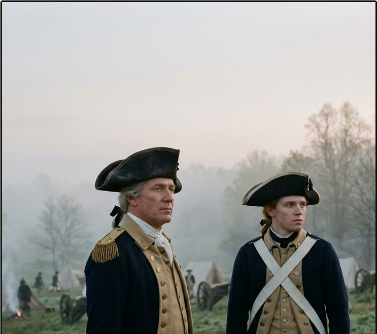
An illustration of Hamilton with Washington in the field.
Leaving the Treasury
In January 1795, Hamilton resigned as Treasury Secretary. His government salary was small, and his family needed a steadier income. He returned to the practice of law in New York, but he did not leave politics. He continued to advise Washington, and he wrote essays defending the Jay Treaty, a controversial agreement with Britain, under the pen name “Camillus.” In 1796, when Washington decided to retire after two terms, Hamilton helped him draft the Farewell Address. It warned against permanent alliances with foreign nations and against the dangers of extreme party spirit. Washington’s decision to leave office voluntarily set a precedent that mattered even more: in a republic, power is meant to be surrendered peacefully.
The break with Adams
The presidential election of 1796 was the first with real parties. John Adams, a Federalist, narrowly defeated Thomas Jefferson. But Hamilton, who thought Adams was vain and unpredictable, tried behind the scenes to engineer a different outcome. It was a clumsy intrigue that failed, and it left Adams permanently suspicious of him.
The next crisis came from abroad. Relations with revolutionary France soured, and in 1798, undeclared naval hostilities, known as the Quasi-War, broke out at sea. Congress expanded the army, and Washington was recalled to lead it, with Hamilton serving as his second-in-command. Hamilton envisioned bold military ambitions. President Adams, however, was wary of war and quietly pursued negotiations with France. When Adams reached a peaceful settlement in 1800, Hamilton was furious.
In the fall of 1800, he wrote a long, scathing pamphlet attacking Adams’s character and judgment, intended for private circulation among Federalist leaders. A copy leaked, and it became public. It was a spectacular blunder. It split the Federalist Party just before the election, and many historians consider it one of the most self-destructive acts of his career.
The election of 1800
The election of 1800 was one of the most dramatic in American history. Adams lost, but the result between Jefferson and his running mate, Aaron Burr, was a tie in the Electoral College, 73 votes each, because of the way electors cast their ballots at the time. The decision went to the House of Representatives, where, after thirty-five deadlocked ballots, a thirty-sixth finally gave the presidency to Jefferson in February 1801.
Hamilton played an unusual role. Many Federalists preferred Burr over Jefferson. Hamilton, who disagreed with Jefferson on nearly everything, lobbied against Burr. He argued that Jefferson, while mistaken in his policies, had principles, whereas Burr, in his view, was dangerous and unscrupulous. Hamilton’s intervention helped Jefferson win. It also gave Burr one more reason to resent him.
A historian’s question: Did Hamilton’s politics destroy him?Some historians argue that Hamilton was a brilliant statesman undone by his temper and his need to win every argument. Others contend that he took principled risks, such as backing Jefferson over Burr, even when they cost him political friends. Both are probably true. The traits that made him a brilliant writer and relentless administrator also made him a difficult ally.
Think About It
Hamilton published the truth about the Reynolds affair to protect his reputation as an official. Was that the right choice? What else could he have done?
Washington stepped down after two terms. Why might it matter, for a republic, that a leader gives up power willingly?
Chapter 13
Honor and Heartbreak
1801 – 1804
A son’s death, a political rival, and the duel that ended Hamilton’s life.
By 1801, Hamilton was no longer in government. He had a busy and profitable law practice in New York, a large and lively family, and a growing circle of political enemies. In November 1801, he helped found a newspaper, the New-York Evening Post, which is still published today as the New York Post. He also planned a country house in northern Manhattan, which he called the Grange, and which he completed in 1802. He and Eliza would have eight children in all.
He was, to all appearances, in a comfortable position. In fact, he was about to endure the worst loss of his life.
Philip
Hamilton’s eldest son, Philip, was nineteen, bright, and charming, a recent graduate of Columbia College who seemed to share his father’s talents and temper. In the summer of 1801, a lawyer named George Eacker had given a Fourth of July speech criticizing Hamilton and his politics. In November, Philip and a friend encountered Eacker at a theater in New York and confronted him, calling him insulting names. Eacker challenged them to duels.
Dueling was a formal ritual that gentlemen of the era used to resolve disputes over honor. It was illegal in New York, but the law was rarely enforced. Because reputation was central to a man’s career and social standing, refusing a challenge could ruin him. The rules, called the code duello, usually allowed for a series of steps in which the parties tried to settle a quarrel with apologies before it came to gunfire. Many duels ended without bloodshed because participants fired into the air or missed deliberately.
Hamilton advised his son to hold his fire, a gesture known as throwing away his shot, which would show that he had courage but no desire to kill. The duel took place on November 23, 1801, on the New Jersey side of the Hudson River, across from Manhattan. According to the surviving accounts, Philip held back, as his father had advised. Eacker did not. Philip was shot and mortally wounded. He died the next day.
An illustration of Alexander and Eliza after Philip’s death.
The loss shattered the family. Hamilton’s oldest daughter, Angelica, was so overwhelmed with grief that she suffered a breakdown and never fully recovered. Hamilton himself was changed. Friends said he became more withdrawn and more religious. And he now knew precisely what it meant to lose a child to a code of honor he had accepted as part of his world.
Aaron Burr
Aaron Burr was a brilliant, ambitious New York lawyer and politician. He had been a Revolutionary War officer, a United States Senator, and, from 1801, Thomas Jefferson’s vice president. He and Hamilton were New York rivals, both talented and proud, and over the years they had sometimes worked together and sometimes opposed one another. Hamilton had repeatedly criticized Burr in private and public, calling him unprincipled, and Burr had defeated Hamilton’s father-in-law, Philip Schuyler, in a Senate race in 1791.
By 1804, Burr’s career was fading. Jefferson had sidelined him, and he was unlikely to remain vice president for a second term. Burr ran for governor of New York. Hamilton campaigned against him, again calling him dangerous. Burr lost badly.
After the election, a newspaper published a letter from a man named Charles Cooper that mentioned a “still more despicable opinion” that Hamilton was said to hold of Burr. Burr demanded an explanation. Hamilton replied that he could not apologize or deny the remarks without knowing what Cooper had meant, and he said that he would not take back things he had said about Burr’s character. A series of formal letters followed, carried by seconds, the friends who represented each man. When it was clear there would be no apology, Burr issued a challenge.
Weehawken
Hamilton did not want to fight. He believed dueling was wrong and had said so. He had lost a son to the practice. He had a large family and substantial debts that would burden Eliza if he died. But he also believed that refusing would destroy his public usefulness, and he held a deep conviction that a man of honor must accept the consequences of his words. Before the duel, he wrote a statement explaining his reasons and indicating that he intended to reserve or throw away his first shot.
At dawn on July 11, 1804, the two men were rowed across the Hudson to a ledge near Weehawken, New Jersey, the same area where Philip had died. Both fired. Burr’s shot struck Hamilton in the lower abdomen. Hamilton’s shot hit a tree branch above and behind Burr’s head. What happened in the seconds before is disputed. Hamilton’s second said he fired accidentally as he fell. Burr’s second said Hamilton fired first, deliberately. The truth cannot be reconstructed with certainty.
An illustration of the Hudson River cliffs near Weehawken at dawn. No people are shown.
Hamilton was taken back to Manhattan and carried to the home of a friend, where doctors treated him. He lived through the night and into the next afternoon. Surrounded by family and friends, including Eliza and several of their children, he died on July 12, 1804. He was either forty-seven or forty-nine, depending on which birth year is correct.
New York shut down for his funeral. Crowds filled the streets, and the procession ended at Trinity Church, where Gouverneur Morris delivered a eulogy. Hamilton was buried in the churchyard, where his grave can still be visited.
Burr was indicted for murder in both New York and New Jersey, and he fled for a time. He eventually returned to Washington to finish his term as vice president. His political career was destroyed, and he was later tried, and acquitted, on charges of treason relating to a mysterious scheme in the Western territories. For the rest of his life, he was known as the man who killed Alexander Hamilton.
A historian’s question: What really happened at Weehawken?Historians still disagree about who fired first and whether Hamilton intended to miss. Some think he deliberately aimed high, to honor his pledge. Others suspect he fired reflexively when he was hit. The surviving evidence includes conflicting statements by the seconds and by Burr. What most scholars agree on is that the duel was a tragedy that grew out of a culture in which personal honor could outweigh human life.
Think About It
Hamilton believed dueling was wrong but accepted the challenge anyway. Why might it be so hard to refuse something you disagree with when everyone expects you to do it?
Philip, and later Hamilton, are said to have intended to throw away their shots. What does that suggest about the code of honor?
Chapter 14
Legacy
1804 and afterward
What happened to Eliza, how Hamilton’s ideas survived, and why people still argue about him.
Hamilton died owing money, and many of his friends feared that his family would be left destitute. Some of them gathered funds and helped Eliza keep the family afloat. Eliza was 47, a widow with seven children, and she faced a long and difficult future. She did far more than survive.
Eliza
Eliza Hamilton lived for another fifty years, until 1854, when she died at the age of ninety-seven. She spent much of that time defending and preserving her husband’s memory. She gathered his letters and papers, worked with historians and with her sons to publish his writings, and corrected what she believed were distortions about his life. Much of what we know about Hamilton exists because of her persistence.
She also built a legacy of her own. In 1806, she helped found the Orphan Asylum Society of New York, the city’s first private orphanage, working alongside Isabella Graham, who had started it. Eliza served the institution for decades, raising funds, looking after children, and advocating for them. The organization still exists today as Graham Windham, a social services agency. Having been orphaned himself, Hamilton would likely have appreciated the cause.
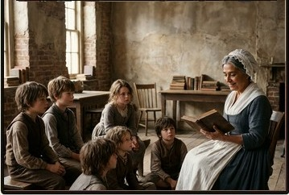
An illustration of Eliza caring for orphaned children in New York.
Eliza was also active in the project to build a monument to George Washington in the capital city, and she lived long enough to see the Washington Monument under construction. She was buried at Trinity Church, next to her husband.
What Hamilton built
Hamilton’s legacy is partly structural. The financial system he designed, including federal assumption of debt, a central bank, a currency, and a revenue service, provided the foundation for the American economy. The idea of implied powers that he argued for in defense of the national bank was adopted by the Supreme Court in the early nineteenth century and became a cornerstone of constitutional law. The Coast Guard traces its origins to the Revenue Cutter Service he proposed. The Bank of New York and the New York Post, both of which he helped establish, are still in operation. His Federalist essays are quoted in court opinions to this day.
His broader vision of a strong national government, an active executive, a commercial economy, and the idea that the Constitution gives government flexible tools to address problems also influenced later political leaders. Abraham Lincoln’s administration, with its national banking system and its support for industry and infrastructure, drew on Hamiltonian ideas. Debates about the proper size and power of the federal government, which began with Hamilton and Jefferson, continue to shape American politics.
A complicated legacy
Hamilton’s reputation has gone up and down. In the nineteenth century, he was admired by some and distrusted by others. In the twentieth century, his image fluctuated. Jefferson’s reputation as a champion of democracy often overshadowed Hamilton’s, partly because Hamilton was open about distrusting the instincts of the public. For a long time, he was best known as the man killed by Burr.
Then, in 2004, historian Ron Chernow published a major biography, and in 2015 Lin-Manuel Miranda’s musical, based on it, turned Hamilton into a cultural phenomenon. When the Treasury Department announced plans to replace his portrait on the ten-dollar bill, public reaction, driven in part by the musical’s popularity, helped lead to a revised plan. A founding father whom many Americans could not have described a decade earlier became a household name.
A newer wave of scholarship has also looked more critically at Hamilton’s record, especially on slavery. He was an early member of the New York Manumission Society and denounced the slave trade, and he supported Laurens’s plan to free soldiers. But he did not make abolition a priority as Treasury Secretary, and his family ties and business dealings connected him to slaveholders. Some recent research argues that he personally participated in buying and selling enslaved people on behalf of his family and clients, while other historians dispute how to read the evidence. It is a reminder that even a founder who criticized slavery lived inside it, and that a fair account has to hold both facts at once.
The same applies to the rest of his story. Hamilton was brilliant, courageous, and hardworking, an immigrant orphan who rose through ability and determination. He was also proud, combative, and sometimes reckless, a man who made enemies he did not need to make and who made serious mistakes in his private life. The musical you are about to see celebrates his talent and ambition. This book has tried to give you the fuller picture, so that when you see the show, you can recognize both what it captures and what it leaves out.
The most important lesson from his life may be about the power of ideas and words. A teenager on a small island wrote a letter and changed his future. A young officer wrote orders and letters that helped hold an army together. A lawyer and writer published eighty-five essays that helped persuade a state to accept a new government. A Treasury secretary wrote reports that gave the country a financial foundation. And a widow spent fifty years making sure the story did not disappear. Hamilton’s life is a case study in how a person with talent, effort, and a willingness to write things down can change the course of a nation, for better and sometimes for worse.
Think About It
If you had to describe Hamilton’s legacy to someone in two sentences, what would you say?
How should we judge historical figures who achieved great things but also took part in, or tolerated, serious injustices?
Timeline
1755 or 1757
Alexander Hamilton is born on the island of Nevis.
1768
His mother dies. He becomes a clerk on St. Croix.
1772
A hurricane hits St. Croix. His letter about it leads to his trip to North America.
1773
He enters King’s College in New York (now Columbia University).
1775
The war begins at Lexington and Concord.
1776
The Declaration of Independence is adopted. Hamilton’s artillery fights in New York and New Jersey.
1777
Hamilton joins George Washington’s staff.
1777 – 78
The army endures the winter at Valley Forge.
1780
Hamilton marries Elizabeth Schuyler.
1781
The Americans and French win at Yorktown. Hamilton leads the attack on Redoubt 10.
1783
The Treaty of Paris ends the war.
1787
The Constitutional Convention meets in Philadelphia.
1787 – 88
The Federalist Papers are published. New York ratifies the Constitution.
1789
Washington becomes the first president. Hamilton becomes the first Treasury Secretary.
1791
The Bill of Rights is added to the Constitution. The Bank of the United States is created.
1790
Hamilton’s debt plan passes after a compromise that places the capital on the Potomac.
1794
The Whiskey Rebellion is put down.
1795
Hamilton leaves the Treasury.
1797
Hamilton publishes the Reynolds Pamphlet.
1800 – 01
Jefferson wins the disputed election; Hamilton opposes Burr.
1801
Hamilton’s son Philip dies in a duel.
1804
Hamilton dies after a duel with Aaron Burr.
1854
Eliza Hamilton dies at age 97.
Who’s Who
Alexander Hamilton
Orphan from the Caribbean who became a soldier, writer, lawyer, and the first Secretary of the Treasury.
Elizabeth “Eliza” Schuyler Hamilton
Hamilton’s wife. Kind, determined, and the keeper of his story for fifty years after his death.
Angelica Schuyler Church
Eliza’s clever older sister and a close friend of Hamilton’s.
George Washington
Commander of the Continental Army and first President.
Aaron Burr
New York lawyer and politician. Hamilton’s rival, and the man who fired the fatal shot.
Thomas Jefferson
Wrote the Declaration of Independence. Served as Secretary of State and later as president. Often disagreed with Hamilton.
James Madison
Helped write the Constitution and the Federalist Papers. Later the fourth president.
John Jay
Wrote some of the Federalist Papers. First Chief Justice of the Supreme Court.
The Marquis de Lafayette
French nobleman who fought for the American cause and became a close friend of Washington and Hamilton.
John Laurens
Hamilton’s close friend and fellow officer, who spoke out against slavery.
King George III
The king of Britain during the American Revolution.
John Adams
Second president and a Federalist. Hamilton clashed with him bitterly in 1800.
Maria Reynolds
The woman involved in the 1791 affair that Hamilton later revealed in his pamphlet.
Philip Hamilton
Alexander and Eliza’s oldest son, who died in a duel at nineteen.
Words to Know
Aide-de-camp
A helper to a general. Hamilton was Washington’s.
Artillery
Cannons and the soldiers who use them.
Bayonet
A blade attached to the end of a musket.
Constitution
The written plan for how the United States government works.
Continental Army
The army of the American colonies during the Revolution.
Duel
A formal fight between two people, often with pistols, to settle an argument about honor. Dueling is now illegal.
Anti-Federalist
Someone who opposed ratifying the Constitution without a bill of rights.
Excise tax
A tax on a particular product, such as whiskey.
Federalism
The division of power between national and state governments.
Federalist
Someone who supported the new Constitution.
Judicial review
The power of courts to strike down laws that violate the Constitution.
Manumission
The legal freeing of an enslaved person.
Loyalist
A colonist who stayed loyal to the king.
Patriot
A colonist who wanted independence.
Ratify
To officially approve something, like the Constitution.
Redoubt
A small fort.
Treasury
The part of the government that manages money.
Real or Stage Magic?
The musical Hamilton was written by Lin-Manuel Miranda, who was inspired by a long biography of Hamilton by the historian Ron Chernow. The show is built on true events, but it is also a piece of theater. Here is what to keep in mind when you watch.
RealHamilton’s childhood in the Caribbean, the hurricane, his move to New York, his friendship with Lafayette and Laurens, his marriage to Eliza, Yorktown, the Federalist Papers, his work in the Treasury, the loss of Philip, and the duel with Burr all really happened.
Stage MagicMany years are squeezed together so the story can move fast. Some conversations are imagined, since nobody wrote down every word. The songs use modern music, including hip-hop, because the writer wanted the story to feel alive and urgent. And the actors who play the founding fathers come from many backgrounds on purpose, so that the cast looks like America today.
Still DebatedHistorians do not agree on exactly when Hamilton was born, on every detail of what happened at the duel, or on how to judge the founders’ actions about slavery. If you wonder about something, that is a good sign. It means you are thinking like a historian.
Things to Watch For
How many times does someone use a pen or a letter to change history?
Listen for the difference between how Hamilton and Burr approach a hard decision.
Notice how Eliza is shown. What does she care about most?
When the show talks about who gets to tell a story, think about who wrote down history, and who did not.
After the Show
Which character did you understand better after reading the book?
What did the show leave out that you learned here?
If you could add one scene, what would it be?
Further Reading
Alexander Hamilton, by Ron Chernow (2004)
The biography that inspired the musical. Long and rich; the early chapters and the Revolution sections are very readable.
The Federalist Papers, by Hamilton, Madison, and Jay
Start with Nos. 1, 10, 51, 70, and 78. They are short, and they are still quoted today.
Hamilton: The Revolution, by Lin-Manuel Miranda and Jeremy McCarter (2016)
The annotated libretto and the story of how the show was made.
Founding Brothers, by Joseph Ellis (2000)
Short essays on the founders, including a chapter on the Hamilton–Burr duel.
founders.archives.gov
Free online letters and papers of Hamilton, Washington, Jefferson, and others. Read the voices yourself.
Questions to Argue About
Was the Constitution a triumph, a compromise, or both?
Would you rather have lived under Hamilton’s vision of America or Jefferson’s?
Why do we remember some people and forget others who mattered just as much?